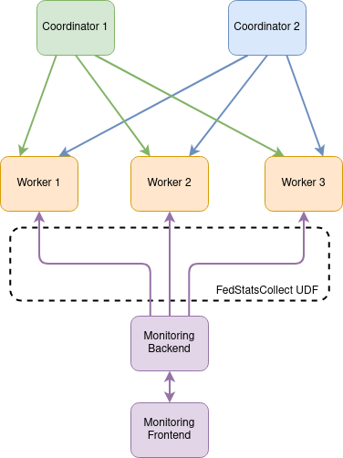

Use SystemDS Federated Monitoring Software
SystemDS Federated Monitoring Software
Introduction
To monitor the federated infrastructure of SystemDS, a monitoring tool was developed for this purpose. A general overview of the architecture can be seen in Figure 1. The monitoring tool consists of two separate decoupled modules, the Java-based monitoring backend and the monitoring frontend developed in Angular.
NOTE: To work with the monitoring tool both the back- and frontend services must be running!

Installation & Build
Install Backend
To compile the project, run the following code, more information can be found here:
mvn package -P distribution
[INFO] ------------------------------------------------------------------------
[INFO] BUILD SUCCESS
[INFO] ------------------------------------------------------------------------
[INFO] Total time: 31.730 s
[INFO] Finished at: 2020-06-18T11:00:29+02:00
[INFO] ------------------------------------------------------------------------
The following example works if you open an terminal at the root of the downloaded release,
or a cloned repository. (You can also change the $(pwd) with the full path to the folder.),
more information can be found here:
export SYSTEMDS_ROOT=$(pwd)
export PATH=$SYSTEMDS_ROOT/bin:$PATH
Install Frontend
Since the frontend is in Angular v13, a node version 12/14/16 or later minor version is required.
To install nodejs and npm go to https://nodejs.org/en/ and install version either 12.x,
14.x or 16.x:
# Verify installation -------
node --version
# Output
# v14.2.0
npm --version
# Output
# 6.14.4
# ---------------------------
To install the npm packages required for the Angular app to run, open the directory with the SystemDS code and run:
# 1. Go into the directory with the frontend app
cd scripts/monitoring
# 2. Install all npm packages
npm install
After those steps all the packages needed for running the monitoring tool should be installed.
Running
Both back- and frontend applications are separate modules of the same tool, they can be independently started and stopped. Since they are designed with loose decoupling in mind, the frontend can integrate with different backends, and the backend can work with different frontends, provided that the format of the data and the communication protocol is preserved.
Backend
To run the backend, use the -fedMonitoring flag followed by a port and can be executed using the systemds binary like this:
# Start the backend with the binary
systemds FEDMONITORING 8080
# You should see something like this
#[ INFO] Setting up Federated Monitoring Backend on port 8080
#[ INFO] Starting Federated Monitoring Backend server at port: 8080
#[ INFO] Started Federated Monitoring Backend at port: 8080
This will start the backend server which will be listening for REST requests on http://localhost:8080.
NOTE: The backend is polling all registered workers with a given frequency, it can be changed by including
the <sysds.federated.monitorFreq>3</sysds.federated.monitorFreq> in the SystemDS-config.xml file, accepting
doubles, representing seconds (0.5 can be used for setting the frequency to be half a second). The example shown
here will start the backend with polling with frequency of 3 seconds, which is also the default value.
Frontend
To run the Angular app:
# 1. While in the systemds directory go to the folder holding the frontend app
cd scripts/monitoring
# 2. Start the angular app
npm start
After this step the Angular UI should be started on http://localhost:4200 and can be viewed by opening the browser on the same address.
NOTE: The address of the backend is hardcoded in the frontend application and can be changed by changing the BASE_URI in the systemds/scripts/monitoring/app/constants.ts file. DO NOT include a trailing slash /, at the end of the address.
3. Coordinator self-registration for monitoring
In addition to the manual registration of coordinators for monitoring, the self-registration feature can be used by
setting the -fedMonitoringAddress flag followed by the address of the backend:
# Start the coordinator process with the -fedMonitoringAddress flag and the address of the backend
systemds -f testFederated.dml -exec singlenode -explain -debug -stats 20 -fedMonitoringAddress http://localhost:8080
NOTE: The backend service should already be running, otherwise the coordinator will not start.